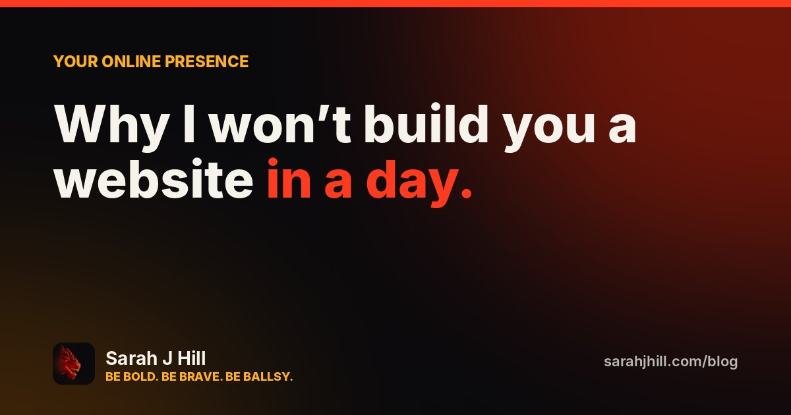
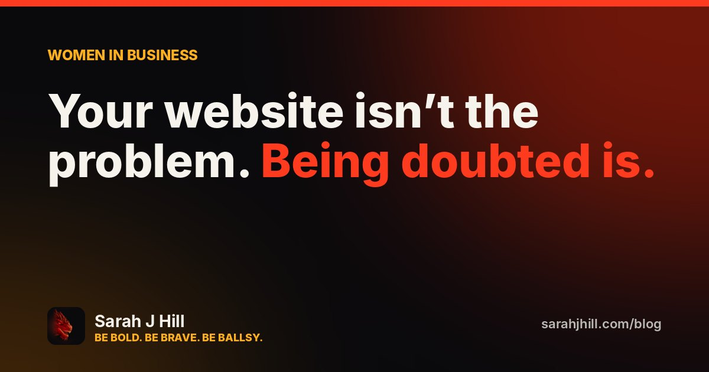
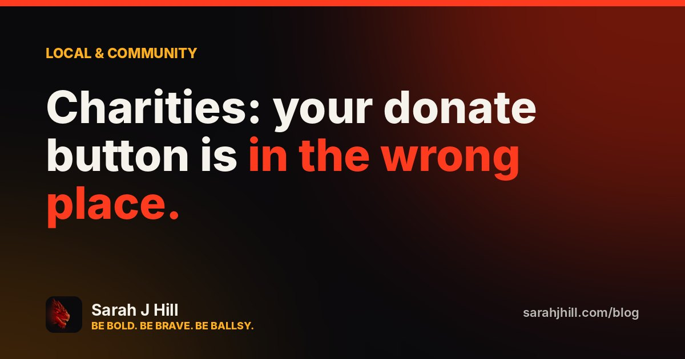
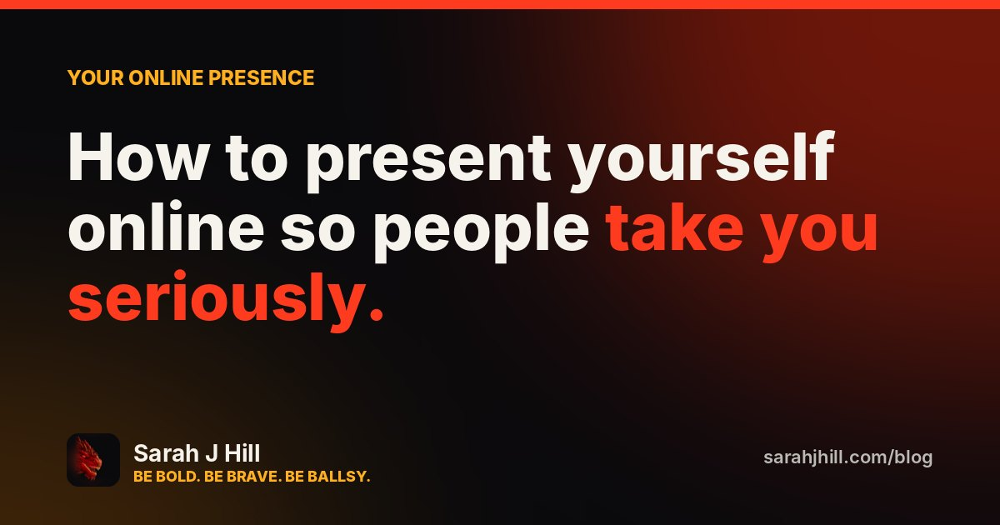

Your online presenceWhy I won’t build you a website in a day.
One-day websites look quick and cheap. Here’s what you actually get, the mistakes they bake in, and seven questions to ask before you pay anyone for a website.
Read · 3 min →
Women in businessYour website isn’t the problem. Being doubted is.
Women in business get second-guessed before they say a word. How to make your website answer the doubt first: what to show, what to cut, and the five-second stranger test.
Read · 2 min →
Local & communityCharities: your donate button is in the wrong place.
What actually works on small charity and community group websites: where donate goes, how to show impact, Gift Aid, volunteers, and the mistakes that quietly cost you support.
Read · 2 min → Women in businessBecoming a tradeswoman in midlife: is it too late?
Retraining as an electrician, plumber or gas engineer at 40 or 50? Real stories, the real numbers, and how to get started without being written off.
Read · 3 min → Women in businessWomen in business in the UK: the facts.
How many women run businesses in the UK, how much funding they get, how Wales and the West Midlands compare, and what it means for your website.
Read · 2 min →
Your online presenceHow to present yourself online so people take you seriously.
Seven practical fixes for women in business, charities and tradeswomen: what to put at the top of your site, how to be found on Google, and how to look as good as you are.
Read · 2 min →Coming next
- Starting out: what nobody tells new entrepreneurs
- Backing local: why community businesses matter in Cardiff & Birmingham
- Bilingual websites: doing Welsh properly